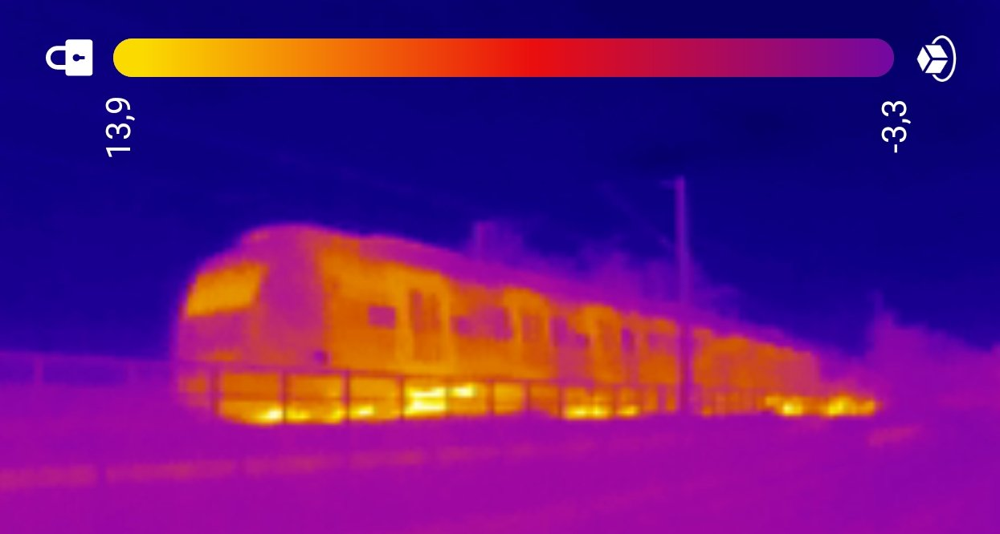
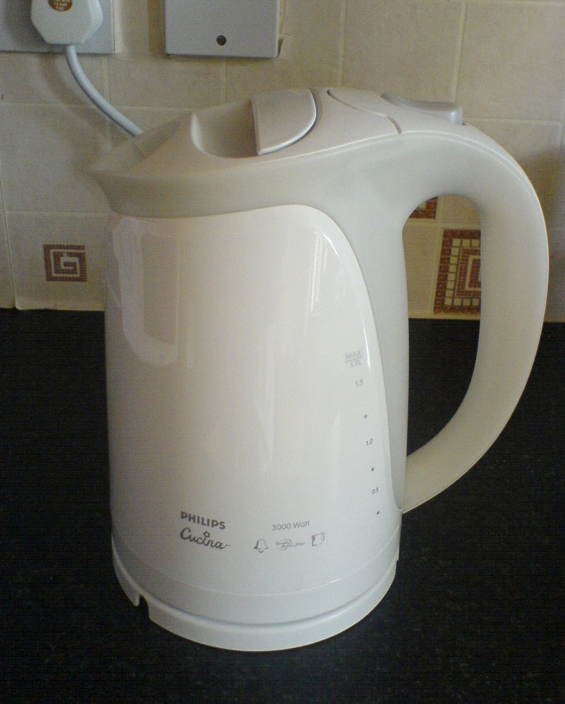
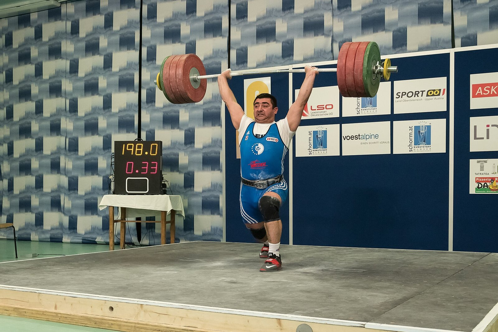

Eine LED-Lichterkette braucht oft nur 3 bis 10 Watt.
Ältere Ketten mit kleinen Glühbirnchen brauchen 30 bis 50 Watt oder mehr – und leuchten nicht heller.
Wohin geht die viele Energie bei der alten Glühbirnchen-Kette, wenn sie nicht heller leuchtet?
Diskussion
Wirkungsgrad und Energiebilanz
Frage der Stunde — was meint ihr?
Warum wird eine alte Glühlampe so heiß, eine LED aber kaum?
Überlegt zu zweit: Was vermutet ihr — und warum?
Schreib deine Vermutung ins Heft.
⏱ 3 min — zu zweit, dann in der Klasse
Erarbeitung · Bild
Wirkungsgrad und Energiebilanz
Wärmebild einer S-Bahn

Wärmebildkamera-Aufnahme einer fahrenden S-Bahn in Stuttgart: hell = warm, dunkel = kalt.
Welche Stellen am Zug leuchten hell? Wofür war die Energie dort eigentlich gedacht?
Auflösung
Unten am Fahrwerk (Motoren, Räder, Bremsen) ist es warm. Die elektrische Energie sollte den Zug bewegen; ein Teil wird aber ungewollt zu Wärme. Der Wirkungsgrad sagt, welcher Anteil wirklich genutzt wird.
Foto: Laserlicht · CC BY-SA 4.0 · Wikimedia Commons
Erarbeitung
Wirkungsgrad und Energiebilanz
Wohin geht die Energie?
Jeder Energiewandler gibt genutzte und nicht genutzte Energie ab.
Die nicht genutzte Energie ist meist thermische Energie.
Der Wirkungsgrad gibt an, welcher Anteil genutzt wird.
Erarbeitung · Tafelbild
Wirkungsgrad und Energiebilanz
Wirkungsgrad und Energiebilanz
Stundenfrage: Warum wird eine alte Glühlampe so heiß, eine LED aber kaum?
Wohin geht die Energie?
Geräte im Vergleich
Den Wirkungsgrad verbessern
Erarbeitung · Tafelbild
Wirkungsgrad und Energiebilanz
Wohin geht die Energie?
mündlich
Jeder Energiewandler gibt genutzte und nicht genutzte Energie ab.
Die nicht genutzte Energie ist meist thermische Energie.
Der Wirkungsgrad gibt an, welcher Anteil genutzt wird.
Stundenfrage: Warum wird eine alte Glühlampe so heiß, eine LED aber kaum?
Wohin geht die Energie?
Jeder Energiewandler gibt genutzte und nicht genutzte Energie ab.
Geräte im Vergleich
Gerät
genutzt
Rest
LED
30 % Licht
70 % thermische Energie
Glühlampe
5 % Licht
95 % thermische Energie
Merksatz
Notieren · Merksatz · so steht es im Heft
Wirkungsgrad und Energiebilanz
So steht es im Heft
Wirkungsgrad und EnergiebilanzDatum:
Stundenfrage: Warum wird eine alte Glühlampe so heiß, eine LED aber kaum?
Wohin geht die Energie?
Jeder Energiewandler gibt genutzte und nicht genutzte Energie ab.
Geräte im Vergleich
Gerät
genutzt
Rest
LED
30 % Licht
70 % thermische Energie
Glühlampe
5 % Licht
95 % thermische Energie
Merksatz
Der Wirkungsgrad eines Energiewandlers gibt an, welcher Anteil der zugeführten Energie genutzt wird. Er wird meist in Prozent angegeben. Der Rest wird meist zu thermischer Energie. Weniger Reibung verbessert den Wirkungsgrad.
Übung · mündlich
Wirkungsgrad und Energiebilanz
Lampen vergleichen
Eine Glühlampe hat einen Wirkungsgrad von rund 5 %, eine LED von rund 30 %. Begründe, welche Lampe du kaufen würdest.
Übung · Lösung
Wirkungsgrad und Energiebilanz
Lösung: Lampen vergleichen
Die LED: Bei ihr wird ein viel größerer Anteil der elektrischen Energie zu Licht.
Bei der Glühlampe werden rund 95 % zu thermischer Energie.
Check-out
Wirkungsgrad und Energiebilanz
Check-out
Erkläre in eigenen Worten, was ein Wirkungsgrad von 30 % bedeutet.
Erläutere, was ein Wirkungsgrad von 25 % beim Menschen bedeutet.
Energiebilanz
Ein Benzinmotor hat einen Wirkungsgrad von rund 30 %. Gib an, wie viel von 100 J chemischer Energie zu kinetischer Energie werden.
Wo ist der Rest?
Nenne die Energieform, zu der beim Benzinmotor der Rest wird.
Einstieg · Vergleich
Leistung
Vergleiche
1) Nur rund ein Viertel der chemischen Energie aus der Nahrung wird zu Bewegung, der Rest zu thermischer Energie.
2) rund 30 J
3) thermische Energie (rund 70 J)
Problemstellung
Leistung
Der Wasserkocher

Ein Wasserkocher macht einen Liter Wasser in wenigen Minuten heiß.
Auf dem Typenschild steht eine Zahl mit „W“ dahinter.
Was verrät euch die Watt-Zahl – und warum ist ein Wasserkocher schneller als ein Tauchsieder mit weniger Watt?
Foto: Rafa · Public domain · Wikimedia Commons
Diskussion
Leistung
Frage der Stunde — was meint ihr?
Zwei Kinder gleicher Masse laufen dieselbe Treppe hoch — eines rennt, eines schlendert. Wer leistet mehr?
Überlegt zu zweit: Was vermutet ihr — und warum?
Schreib deine Vermutung ins Heft.
⏱ 3 min — zu zweit, dann in der Klasse
Erarbeitung · Bild
Leistung
Gewichtheben

Ein Gewichtheber stemmt eine schwere Hantel über den Kopf (Disziplin Stoßen, Wettkampf).
Zwei Sportler heben dieselbe Hantel gleich hoch – der eine in 1 Sekunde, der andere in 3 Sekunden. Wer hat mehr geleistet?
Auflösung
Beide verrichten dieselbe Arbeit (gleiche Last, gleiche Höhe). Wer schneller ist, hat die größere Leistung: Leistung = Arbeit (Energie) pro Zeit.
Foto: Isiwal · CC BY-SA 4.0 · Wikimedia Commons
Erarbeitung · Demo
Leistung
Wir schauen zu: Leistung beim Treppensteigen
Material: Stoppuhr (Handy), Maßband oder Zollstock, Personenwaage oder Massenangabe
Wie groß ist deine Leistung beim Treppensteigen?
Beobachtet genau, was passiert.
Beschreibt es danach in einem Satz.
Erarbeitung
Leistung
Schnell oder langsam umgewandelt
Beide Kinder gewinnen dieselbe potentielle Energie.
Das rennende Kind braucht weniger Zeit.
Die Leistung gibt an, wie schnell Energie umgewandelt wird.
P = E : t
Erarbeitung
Leistung
Leistung beim Treppensteigen auswerten
1. Gewichtskraft: FG = m · 10 N/kg
2. Energie: E = FG · h
3. Leistung: P = E : t
Beispiel: 60 kg, 3 m, 9 s → 600 N · 3 m = 1800 J; 1800 J : 9 s = 200 W
Erarbeitung · Tafelbild
Leistung
Leistung
Stundenfrage: Zwei Kinder gleicher Masse laufen dieselbe Treppe hoch — eines rennt, eines schlendert. Wer leistet mehr?
Schnell oder langsam umgewandelt
Die neue Größe
Leistung beim Treppensteigen
Erarbeitung · Tafelbild
Leistung
Schnell oder langsam umgewandelt
mündlich
Beide Kinder gewinnen dieselbe potentielle Energie.
Das rennende Kind braucht weniger Zeit.
Die Leistung gibt an, wie schnell Energie umgewandelt wird.
Klick auf eine Lücke deckt sie auf.
Erarbeitung · Tafelbild
Leistung
Die neue Größe
mündlichnur besprechen
1 kW = 1000 W
Formelzeichen
Einheit
Gleichung
P
Watt (W)
P = E : t
Klick auf eine Lücke deckt sie auf.
Erarbeitung · Tafelbild
Leistung
Leistung beim Treppensteigen
gemeinsam ausrechnen
Beispiel: 60 kg, 3 m hoch, 9 s
1. FG = 60 kg · 10 N/kg = 600 N
2. E = FG · h = 600 N · 3 m = 1800 J
3. P = E : t = 1800 J : 9 s = 200 W
Klick auf eine Lücke deckt sie auf.
Notieren · Tafelbild · so steht es im Heft
Leistung
So steht es im Heft
LeistungDatum:
Stundenfrage: Zwei Kinder gleicher Masse laufen dieselbe Treppe hoch — eines rennt, eines schlendert. Wer leistet mehr?
Schnell oder langsam umgewandelt
Beide Kinder gewinnen dieselbe potentielle Energie.
Das rennende Kind braucht weniger Zeit.
Leistung beim Treppensteigen
Beispiel: 60 kg, 3 m hoch, 9 s
1. FG = 60 kg · 10 N/kg = 600 N
2. E = FG · h = 600 N · 3 m = 1800 J
3. P = E : t = 1800 J : 9 s = 200 W
Merksatz
Merksatz
Notieren · Merksatz · so steht es im Heft
Leistung
So steht es im Heft
LeistungDatum:
Stundenfrage: Zwei Kinder gleicher Masse laufen dieselbe Treppe hoch — eines rennt, eines schlendert. Wer leistet mehr?
Schnell oder langsam umgewandelt
Beide Kinder gewinnen dieselbe potentielle Energie.
Das rennende Kind braucht weniger Zeit.
Leistung beim Treppensteigen
Beispiel: 60 kg, 3 m hoch, 9 s
1. FG = 60 kg · 10 N/kg = 600 N
2. E = FG · h = 600 N · 3 m = 1800 J
3. P = E : t = 1800 J : 9 s = 200 W
Merksatz
Die Leistung gibt an, wie schnell Energie umgewandelt oder übertragen wird: P = E : t. Wer dieselbe Energie in kürzerer Zeit umwandelt, hat die größere Leistung.
Merksatz
Beim Heben eines Körpers ist E die gewonnene potentielle Energie: P = FG · h : t. Ein Mensch schafft beim Treppensteigen kurzzeitig einige hundert Watt.
Notieren · Größe
Leistung
Neue Größe: Leistung
Das gibt sie an
Gibt an, wie schnell Energie umgewandelt oder übertragen wird.
Formelzeichen
P
Einheit
Watt, Zeichen W
Umrechnung
1 W = 1 J : 1 s UND 1 kW = 1000 W
Messgerät
Leistungsmesser (Energiekosten-Messgerät) bei elektrischen Geräten, sonst berechnet.
Berechnen
P = E : t
So groß ist das
LED-Lampe rund 5 W, Mensch auf der Treppe einige 100 W, Wasserkocher rund 2000 W, Auto rund 100 kW.
Achtung: Leistung ist nicht dasselbe wie Energie. Wer langsam geht, braucht dieselbe Energie, aber weniger Leistung.
Hilfe · Formeldreieck
Leistung
Das Formeldreieck: Leistung
Die gesuchte Größe mit dem Finger zudecken.
Stehen die beiden anderen nebeneinander: malnehmen.
Steht eine über der anderen: teilen — oben durch unten.
Hilfe · Musteraufgabe
Leistung
Leistung beim Treppensteigen
Lea (m = 50 kg) läuft eine 3 m hohe Treppe in 6 s hoch. Berechne ihre Leistung.
Gegeben
FG = 50 kg · 10 N/kg = 500 N E = FG · h = 500 N · 3 m = 1500 J t = 6 s
Gesucht
P
Formel
P = E : t
Einsetzen
P = 1500 J : 6 s
Einheit
J : s = W
Ergebnis
P = 250 W
Hilfe · Musteraufgabe
Leistung
Stimmt das? Leistung beim Treppensteigen
Ergebnis:P = 250 W
Gegenprobe: rückwärts rechnen
E = P · t = 250 W · 6 s = 1500 J ✓
Plausibel? Ein Mensch schafft kurzzeitig einige hundert Watt — 250 W passen.
Antwort: Lea bringt beim Treppensteigen 250 W auf.
Übung · schriftlich
Leistung
Übung — schriftlich ins Heft
Treppenlauf
Ein Kind (50 kg) läuft eine 3 m hohe Treppe in 6 s hoch. Berechne seine Leistung.